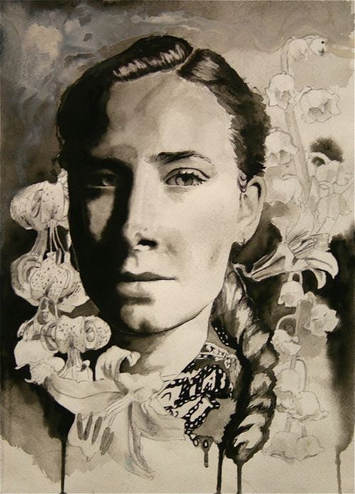
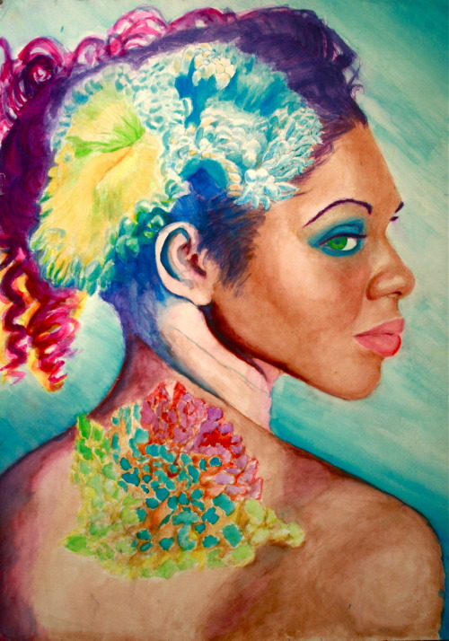
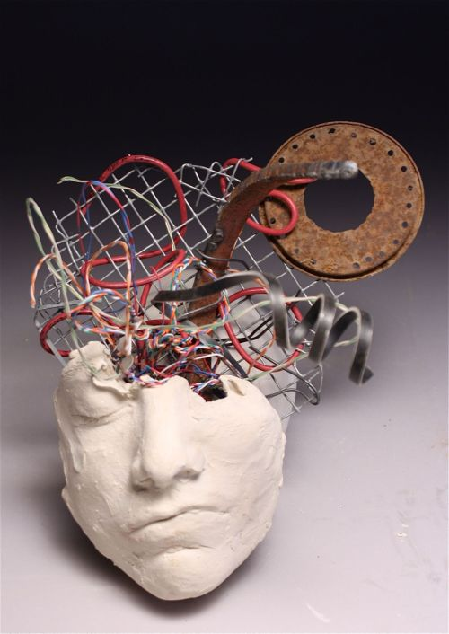

The piece was made using ink and watercolors. Watercolors are useful for creating a very smokey, faded, ethereal look. The ink is used to intensify certain areas of the painting such as the eyes, other facial features, and pattern on the collar.

I have always had an appreciation of the aesthetic feature of the sea. Various coral in particular is fun to look at. When I created this piece I wanted the colors to be very vivid, and I enjoyed moving away from photorealism to a more surreal realm by collaging nature with portraits. I thought incorporating the abstract appeareance of coral would work well for this.

This is sculptural portrait using a clay face mold and various "junk" laying around the studio. There is something fun about taking everyday objects that have been cast away and incorporating them into something personally meaningful.